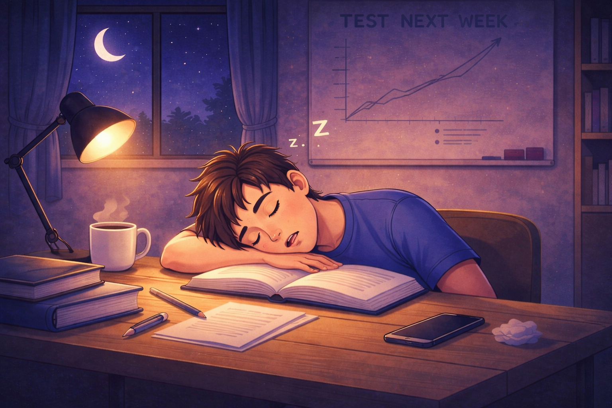

Sleep is especially important for students because it plays a key role in learning, memory, and concentration. When students sleep, the brain processes information that was learned during the day and strengthens neural connections associated with memory.
Research has shown that sleep helps transfer information from short-term memory to long-term memory. This process allows students to remember important information more effectively during exams or coursework.
Students who get enough sleep are more likely to understand concepts clearly and retain information for longer periods.
Students who do not get enough sleep often experience difficulty concentrating during lectures or study sessions. Lack of sleep can also reduce problem-solving ability and creativity.
In addition, sleep deprivation can lead to increased stress, lower motivation, and reduced overall academic performance.
Many students develop poor sleep habits due to late-night studying, social media usage, or irregular schedules.
While students may believe that sacrificing sleep helps them study more, sleep deprivation often has the opposite effect.
Without enough sleep, the brain cannot process information efficiently, which makes studying less effective. This can lead to lower grades, reduced understanding, and increased difficulty during exams.
Maintaining healthy sleep habits can significantly improve academic performance. Students who get enough sleep are more focused, productive, and better able to retain information.